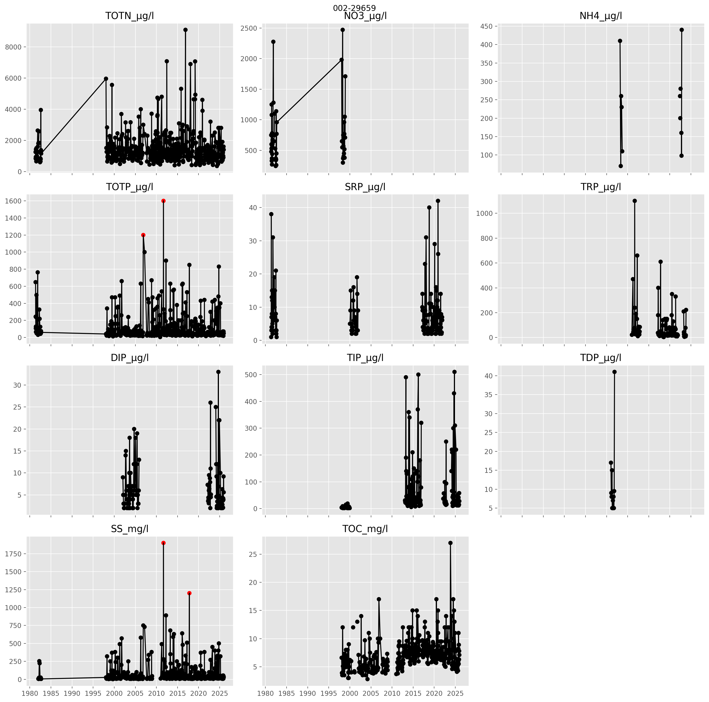

4 Methodology
4.1 Data preparation and cleaning
Data was downloaded for all stations and waterbodies listed in Table 3.1 using the Vannmiljø API. Table 4.1 shows how parameter names in Vannmiljø have been converted to standardised names and units consistent with the parameters modelled by TEOTIL3.
| Vannmiljø | Standardised | Description | Standardised unit |
|---|---|---|---|
| N-TOT (ufiltrert) | TOTN | Total nitrogen | µg-N/l |
| N-NO3 (filtrert) | NO3 | Nitrate | µg-N/l |
| N-NO3 (ufiltrert) | NO3 | Nitrate | µg-N/l |
| N-NH4 (ufiltrert) | NH4 | Ammonium | µg-N/l |
| P-TOT (filtrert) | TDP | Total dissolved phosphorus | µg-P/l |
| P-TOT (ufiltrert) | TOTP | Total phosphorus | µg-P/l |
| P-ORTO (filtrert) | SRP | Soluble reactive phosphorus | µg-P/l |
| P-ORTO (ufiltrert) | TRP | Total reactive phosphorus | µg-P/l |
| P-PO4 (filtrert) | DIP | Dissolved inorganic phosphorus | µg-P/l |
| P-PO4 (ufiltrert) | TIP | Total inorganic phosphorus | µg-P/l |
| STS (ufiltrert) | SS | Suspended sediment | mg/l |
| TOC (ufiltrert) | TOC | Total organic carbon | mg-C/l |
Extreme outliers in the time series for each parameter were identified using the double median absolute deviation (MAD) method with a modified z-score threshold of 10. The method calculates separate MAD values above and below the median, allowing robust outlier detection in skewed distributions without assuming normality. Observations with modified z-scores greater than 10 were flagged as outliers.
A threshold of 10 is substantially higher than the commonly used value of 3.5 and therefore represents a conservative screening criterion. As a result, only the most extreme departures from the typical behaviour of the time series are identified as outliers, minimising the risk of incorrectly flagging valid observations.
Figure 4.1 shows raw water chemistry data from the lower Leira catchment at station 002-29659 (Leira ved Borgen bru). Measurements identified as outliers are highlighted in red. Monitoring at this location is representative of the wider dataset for Lillestrøm kommune, with extensive records for TOTN, TOTP, TOC and SS. By contrast, data for ammonium and nitrate are sparse, and monitoring of phosphorus fractions has been inconsistent, comprising varying combinations of SRP, TRP, DIP, TIP, and TDP depending on the site, contractor, and monitoring period.
The absence of consistent long-term monitoring of nitrogen and phosphorus fractions limits the ability to assess annual trends in concentrations and loads for these parameters. Consequently, analysis of the observed data in this project has been restricted to TOTN, TOTP, TOC and SS. A matrix plot of the raw data for all stations is available here.
{kind=link}

002-29659 (Leira ved Borgen bru). Measurements identified as outliers using the “double median absolute deviation” method are shown in red
4.2 Annual mean concentrations
To assess trends in concentration, outliers were removed from the dataset and annual mean concentrations calculated for each site and waterbody. To avoid biases due to limited monitoring, annual means were only calculated for years with at least 12 data points (i.e. at least 12 samples per year per station or waterbody).
4.3 Annual loads
Annual loads were estimated from the monitoring data for each station and waterbody using the cleaned concentration dataset i.e. after removing outliers and only including years with at least 12 samples per site or waterbody. Daily flow data for each site was downloaded from NVE via the GTS API (see Section 3.2).
Estimates of annual riverine loads were calculated according to Equation Equation 4.1 following the recommendations in OSPAR Agreement 2014:04 (§6.13b). This is the same method used by national monitoring programmes such as Elveovervåkingsprogrammet and is designed to account for irregular sampling frequencies and the influence of high-flow events.
\[ L = Q_r \frac{\sum_{i=1}^{n} C_i Q_i t_i}{\sum_{i=1}^{n} Q_i t_i} \tag{4.1}\]
where \(L\) is the annual load; \(Q_i\) represents the water discharge on sampling day \(i\); \(C_i\) is the concentration measured on day \(i\); \(t_i\) is the time period from the midpoint between day \((i-1)\) and day \(i\) to the midpoint between day \(i\) and day \((i+1)\), that is, half the number of days between the previous and subsequent sampling events; and \(Q_r\) is the annual water volume.